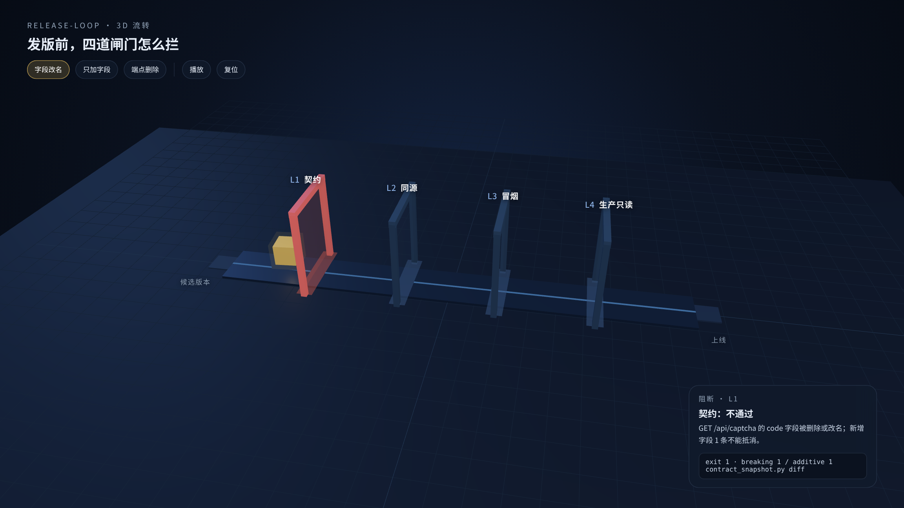

发版前，什么情况不能发
release-loop 把发版拆成四层闸门，每层有明确的放过条件和停手条件。下面三个样例都走同一份契约快照比对，可以直接跑出同样的结果。
01它解决什么
发版出事，很少是包传错。常见是三件事：把“容器 Up、版本号对”当成发版成功；只升了一半，后端改了响应字段、前端没跟；结论跑在证据前面，“应该是环境问题”。这个工程把“这个版本能不能发”拆成四层——契约、同源、冒烟、生产只读——每层有判定，失败就停。
- L1 契约：提交前比对接口字段，删字段、改字段名即阻断
- L2 同源：前后端同一批制品、版本单一来源
- L3 冒烟：发版后验真实业务链路，健康检查不算数
- L4 生产：只做只读确认，按回车由人执行
02三个可复现的判定
验证码接口把 code 改名 imageCode。后端自己测是通的，前端还按 code 取值，页面拿不到验证码。字段改名就是半套升级，发版前拦掉。
登录响应加了 expiresIn，老前端不读也不受影响。新增字段不构成阻断理由，放行。闸门只拦会破坏现有调用的变更。
健康检查端点被删。发版脚本还在探它，切完容器就判失败。端点删除比字段改名更彻底，同样阻断。

03规则是脚本拦截
“发版前比对契约”写在文档里很容易，落到执行常被跳过，因为人总觉得“这次只是加个字段”。这里的做法是让 diff 直接给退出码，跳过就等于失败。
健康 200 不构成证据。它只证明进程活着。样例 C 里端点被删，服务照样起得来，健康探针照样返回 200，发版脚本却会挂在下一步。所以 L3 的强制项是真实业务链路：取验证码、图片非空、提交、拿 token。
比对的是字段集合，不是“看起来对”。字段名、端点路径、请求体字段逐个比，少一个就是破坏性变更。判断不依赖当时的评审人记不记得。
04判据与边界
| 维度 | 口径 |
|---|---|
| 拦什么 | 端点删除、请求或响应字段删除与改名 |
| 什么时候放行 | 破坏性变更 0 条；新增字段、新增端点不算 |
| 什么时候停手 | 破坏性变更 ≥1，停手；要么同批发，要么回退 |
| 验证顺序 | L1 契约（提交前）→ L2 同源（合入前）→ L3 冒烟（发版后）→ L4 生产只读 |
| 职责范围 | 判定“这个包能不能发”；生产按回车由人执行 |
执行方式：本地运行，Python 3 直接跑；快照由 snapshot 子命令生成，diff 做比对；退出码 0 = 放行，1 = 破坏性变更，2 = 用法或读取错误。
05怎么复现
快照用 openapi-base.json 等四份源生成：snapshot --source fixtures/openapi-base.json --out fixtures/snap-base.json。样例为构造输入。